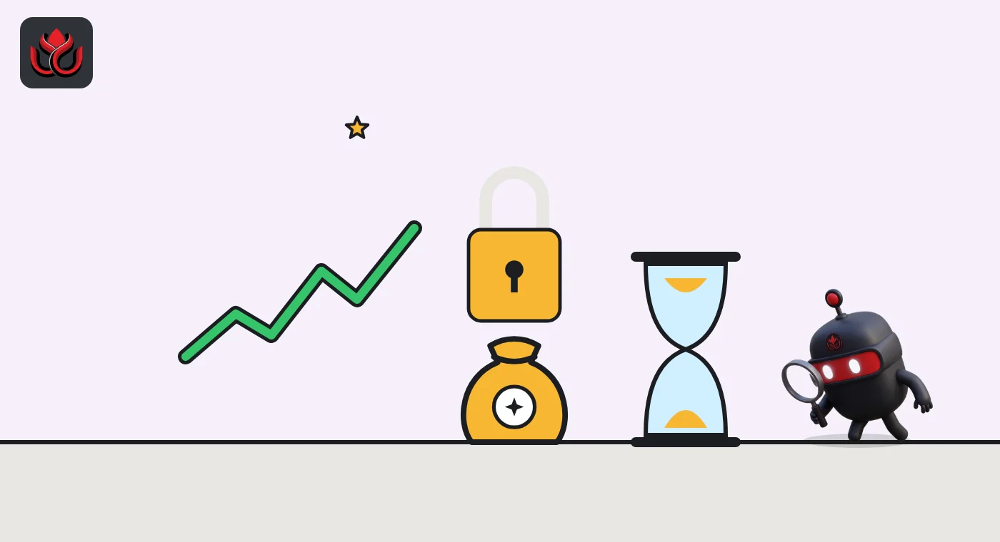

Concrete's CT token fell 78% in a month. Its vaults still hold $1.2 billion
Blueprint Finance's vault platform launched CT on September 30. By November 2 the token traded near $0.134, far below its $0.62 high, even though deposits held steady. Insiders and the foundation own 65% of supply, and its launch post gives no unlock dates.
Key points
- Concrete launched its CT token on September 30, 2026, with a fixed supply of 1 billion and no inflation.
- On November 2 CT traded near $0.134, 78% below its $0.6195 peak, while deposits on the platform stood at $1.311 billion.
- Investors hold 28%, the team 22% and the foundation 15%; only 19% of supply circulates and the launch post gives no vesting terms.
A token launch, then a 78% fall
Concrete's CT token traded at about $0.134 on November 2, down 78.4% from its all-time high of $0.6195 and only about 6% above its low of $0.1265, according to CoinGecko. Concrete, a DeFi vault platform built by Blueprint Finance, launched the token on September 30, 2026, the Concrete Foundation said.
CT is a governance token. People who lock it can vote on certain protocol decisions, such as which strategies the vaults support, how collateral is classified and how fees are set. People who stake it can get adjustments to some fees on their own use of Concrete products.
The token is issued by Concrete Network, Ltd. in the British Virgin Islands, and the treasury is run by the Concrete Foundation, a Cayman Islands foundation company. The foundation states that CT gives no ownership, equity, debt, dividend or profit-sharing rights.
What Concrete does
Concrete runs vaults: smart contracts that pool user deposits and put them into yield strategies. Its products are called Earn, Vaults, Enterprise and AssetCX. Blueprint Finance is the company that develops it.
At launch the foundation said the ecosystem had more than $1.2 billion in deposits, more than $23 billion in cumulative volume and more than 54,000 depositors. Those figures have held up. The foundation's site showed $1.311 billion of deposits, $24.90 billion of volume and 53,990 depositors on November 2, and CoinGecko listed total value locked at about $1.23 billion.
That is the gap at the heart of this story: the business has stayed the same size, while the token has lost most of its value.
Who holds the supply
Supply is fixed at 1 billion CT with no inflation. The foundation's allocation gives 35% to the ecosystem, 28% to investors, 22% to the team and 15% to the foundation. The ecosystem bucket covers community distribution, liquidity and growth, and 1% of that bucket is set aside for a community airdrop. Team and investor tokens are on long-term vesting schedules, the foundation says, though its launch post does not give the exact terms.
CoinGecko counts 190 million CT, or 19% of supply, as circulating. At about $0.134, that gives a market value of roughly $25.5 million and a fully diluted valuation, the value of all 1 billion tokens, of about $134 million. Trading volume was about $9.7 million over 24 hours, and open interest on perpetual futures was about $43.9 million, well above spot volume.
CT token allocation
% of 1 billion CT
Source: Concrete Foundation, CT TGE post
The slide in late October
CoinGecko's daily data for CT begins on October 14, when the token closed at about $0.377. It traded between about $0.30 and $0.39 for most of the next week. Then it broke lower. CT closed at $0.2761 on October 21 and $0.2274 on October 22, on volume of about $62 million and $66 million, the busiest days in the series.
The fall continued into the end of the month. CT closed below $0.20 for the first time on October 23 and reached $0.1302 on October 29. It ended November 1 at about $0.141.
CT daily close, CoinGecko
US$
Source: CoinGecko CT historical data, dates in UTC

Where CT trades
The foundation lists nine venues for CT: OKX, Binance Alpha, Coinbase, Gate, Bitget, Kraken, Bitvavo, KuCoin and MEXC. Binance Alpha is Binance's early-stage token board inside its wallet app. The token runs on both Ethereum and BNB Chain at the same contract address, 0x0A092E544DA31150b439a1aAA1A3a2214a867F46, which can be checked on Etherscan.
The foundation also published a white paper under MiCAR, the EU crypto rules, to support CT's admission to trading in Europe. It says each exchange sets its own trading times, pairs and eligibility, and that availability varies by country.
For users, the point is that the same token can trade at slightly different prices across venues, and that leveraged futures markets, where open interest is larger than daily spot volume, can drive moves in the spot price.
Risks for holders
- Insider share. The foundation, team and investors own 65% of supply. Vesting terms for team and investors were not set out in the launch post, so the timing of future unlocks is unclear.
- Low float. Only 19% of supply circulates, so the market prices a small slice of the total.
- Thin value capture so far. Governance rights and fee adjustments do not send protocol revenue to token holders.
- Derivatives weight. Futures open interest is several times daily spot volume, which can magnify price swings.
- Fake tokens. The foundation warns of copycat tokens and claim pages. Contract addresses should be checked against concrete.xyz or concretefoundation.xyz.
Timeline
CT token generation event
First CoinGecko daily close for CT, about $0.377
CT closes at $0.2274 on its busiest day
CT closes at $0.1302
CT near $0.134; deposits at $1.311 billion
LC Insight analysis
This section is our reading of the facts above, not a statement of fact.
- We think Concrete is a rare launch where the product came before the token. More than $1.2 billion in deposits gives CT a real business to govern, which many 2026 launches lacked.
- The weak link is between that business and the token. Until fees reach stakers in a measurable way, CT trades on mood, listings and futures bets more than cash flow, and October showed how fast that turns.
- Supply is the pressure point. With 81% of tokens not yet circulating and no unlock schedule in the launch post, we would not read much into the current price until those terms are clear.
What's next
- Publication of detailed team and investor vesting schedules
- Governance proposals that set fee rules for CT stakers
- Deposit trends against the $1.2 billion launch figure
Disclaimer. This article is based on public information and the sources listed below as of the update time shown. It is for information only and is not investment, legal or tax advice. Figures may change as companies and authorities publish new data.